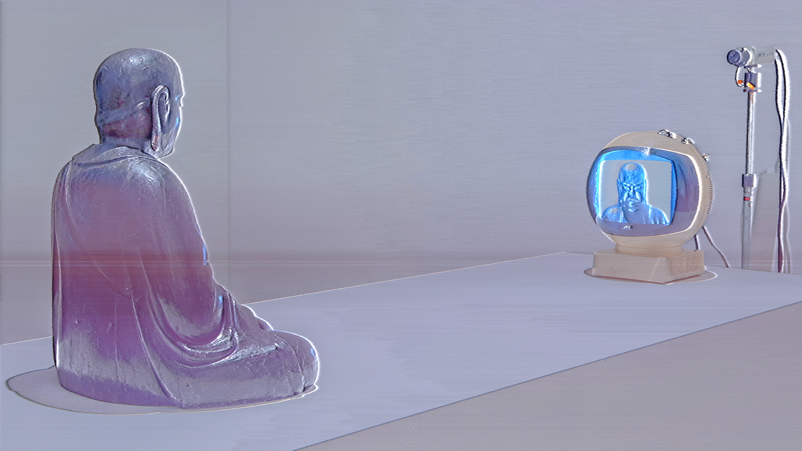
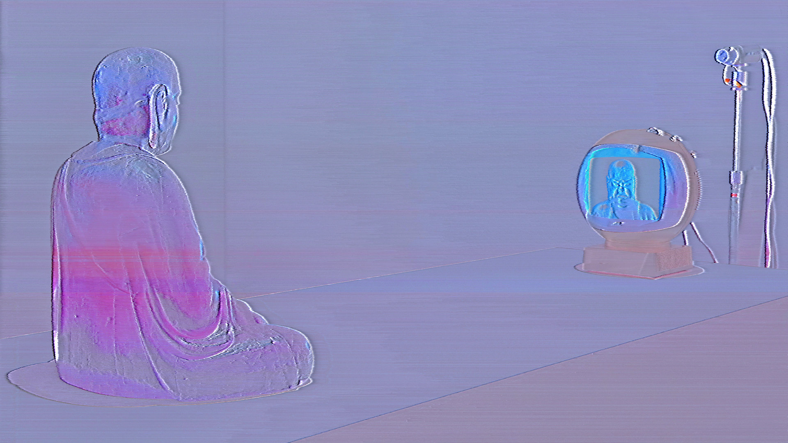
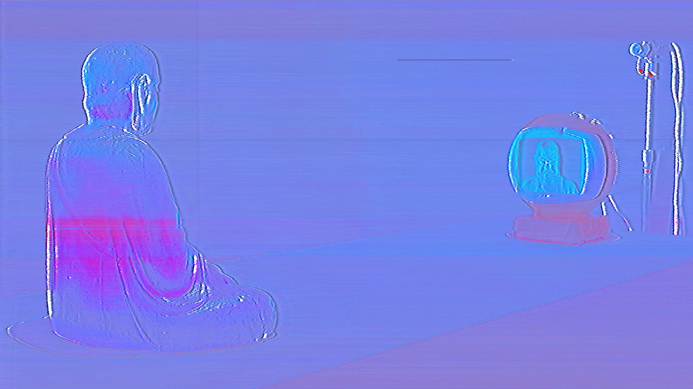
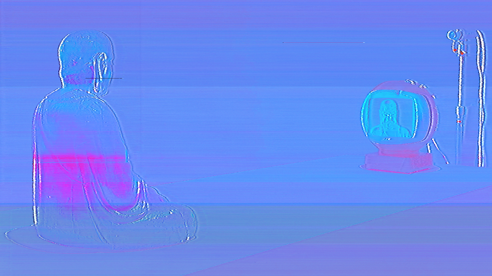
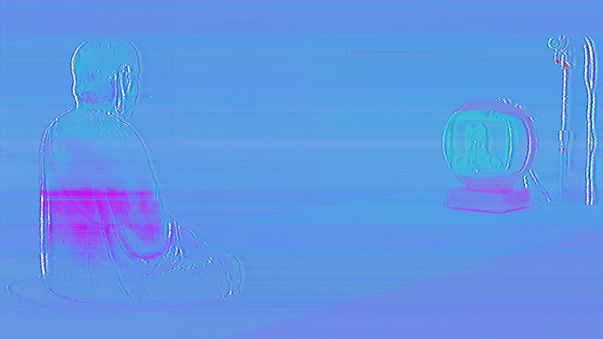
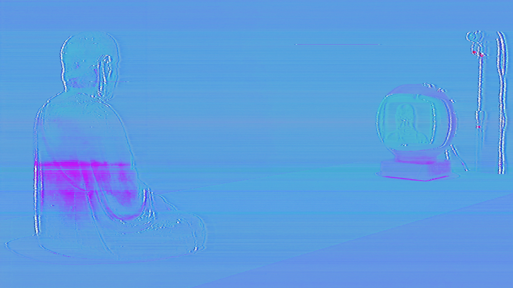

seed image
image after 24h
image after 48h

image after 72h
image after 96h
image after 120h
image after 144h
image after 168h
observed, observing, observer
television, video projector, webcam, software, computer, plinth
dimensions and duration variable
2023
observed, observing, observerbegins with a simple observation: it takes exactly twenty-four hours, at twenty-four frames per second, to display each pixel on a high-definition television screen. From this, the work unfolds as an extended experiment in translation and decay.
an image of nam june paik’s tv buddha is rendered into an animation where each pixel of the original becomes a single frame. played at 24 frames per second, the complete image emerges over precisely twenty-four hours. a television displays this animation while a webcam positioned directly opposite records it in real time. after a full day, a computer reconstructs the recording back into a still image. because this process occurs in physical space, it is subject to shifting light and ambient interference, which in turn results in an image that is never an exact replica. the new image is then used to generate another animation, and the cycle repeats for several days until the original is erased or distorted beyond recognition.
the work highlights the limits of digital technology in capturing reality. while an algorithm could copy an image perfectly in a virtual environment, introducing the physical world exposes the gap between virtual precision and material experience.
artist: peter william holden
peter william holden investigate ways to expand cinematic language by using sculpture to convey experimental animation. in his recent work, peter has found himself exploring more conceptual ideas related to time and perception. these projects employ slow frame rates and image deconstruction to create what he calls ambient animation.
as a result of this ongoing exploration, he has been awarded the first prize in media arts at the 13th canariasmediafest, gran canaria, and his work has also been exhibited internationally at venues such as seoul's national museum of modern and contemporary art, oö kulturquartier linz, museum der bildenden künste leipzig, power station of art shanghai, riaus adelaide, exit festival paris, amber’09 istanbul, wro media art biennale wroclaw, kapelica gallery ljubljana, almost cinema gent, and ars electronica linz.